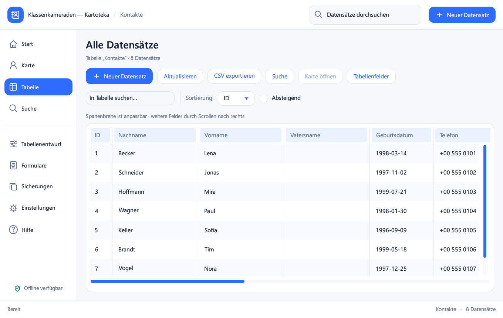

Kartoteka
Verwalten Sie Kontakte, Sammlungen und andere Listen auf Ihrem eigenen Computer. Karten, Tabellen, eigene Felder, Fotos, Dokumente, Suche und Sicherungen in einer Anwendung.
Release · 0.5.0Vor dem StartWindows 11 x64. Keine Administratorrechte nötig. Die EXE ist nicht signiert.

Was drin steckt
Installation, Funktionen, Daten, Prüfung.
Installation und Start
Starten Sie Kartoteka-0.5.0-Setup.exe und behalten Sie den vorgeschlagenen Benutzerordner. Administratorrechte und Rust sind nicht erforderlich. Speichern und schließen Sie die alte Anwendung vor einem Update. Ohne Installation: das gesamte portable ZIP entpacken; EXE und drei DLL-Dateien müssen zusammenbleiben.
Läuft lokal
Kein Konto, keine Cloud, keine Telemetrie. Die Daten liegen unverschlüsselt im Benutzerordner; Adressen öffnen sich nur auf Ihren Klick.
Lokal · offlineFunktionen
Geprüft
- Automatische Prüfungen auf GitHub Actions: Formatierung, Build, 39 Tests
- SHA-256-Prüfsummen für die Release-Dateien (SHA256SUMS.txt)
- Version 0.5.0 mit Beschreibung der Änderungen
- Oberfläche und Dokumentation auf Russisch, Deutsch und Englisch
- Installer nach dem Protokoll in RELEASE-CHECKS.md geprüft
Direkt im Browser testen
Eine Beispiel-Kartei mit erfundenen Einträgen: suchen, Karte öffnen, Eintrag hinzufügen oder ändern. Alles nur im Speicher — nach dem Neuladen ist wieder der Ausgangszustand da.
Funktionen
- Datensatzkarten und Gesamttabelle mit anpassbaren Spaltenbreiten.
- Eigene Tabellen und 11 Feldtypen: kurzer und langer Text, Ganz- und Dezimalzahlen, Datum, Uhrzeit, Datum/Uhrzeit, Kontrollkästchen, URL, Foto und Dokument.
- Fotovorschau, verwaltete lokale Dokumentkopien und Website-Links.
- Suche in der ausgewählten Tabelle, Filter für geladene Zeilen und CSV-Export.
- Sicherung von Datenbank und Anhängen; Schutzkopie vor einer Wiederherstellung.
- Helle Oberfläche, 80–150% Skalierung, einklappbares Menü und RU/DE/EN.
Voraussetzungen und Grenzen
Auf Windows 11 x64 geprüft. Die EXE ist nicht signiert. Die Tabelle zeigt bis zu 2000 Zeilen, die Suche bis zu 500 Treffer. Freie Formularanordnung und Microsoft-Access-Import sind nicht implementiert. Windows-DPI 125/150% und zwei Monitore sind nicht separat geprüft; die Schriftglättung hängt vom egui-Renderer ab. Keine Telemetrie; Kernfunktionen arbeiten offline.
Rechte und Nutzung
Der Quellcode ist zur Ansicht öffentlich; es handelt sich nicht um eine Open-Source-Lizenz. Ein unverändertes Release darf für den persönlichen Gebrauch heruntergeladen und ausgeführt werden. Einzelheiten: RIGHTS.de.md; Rechte an Drittkomponenten: third-party/README.md.